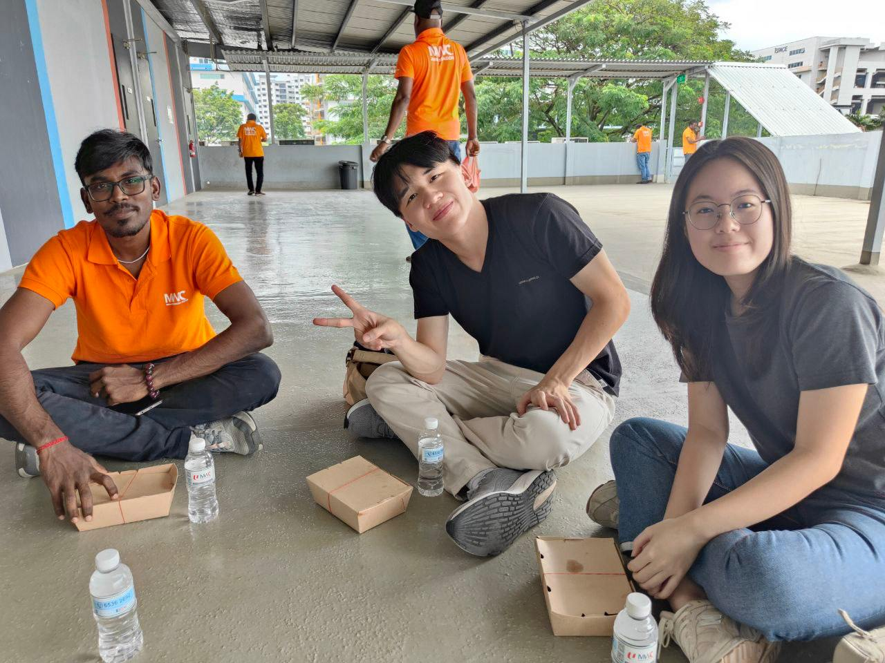

Migrant workers arrive in Singapore and immediately need to navigate systems that assume you already understand them: opening bank accounts, understanding CPF contributions, reading employment contracts, figuring out remittance fees. Most of this information is in English. Most workers speak Bengali, Tamil, Mandarin, or Malay as their first language. The information exists, but the access doesn't.
I'm leading research and prototype development on using conversational AI to bridge that gap. The core question: can a multilingual chatbot explain financial concepts (savings accounts, interest rates, insurance) in a way that actually makes sense to someone navigating an unfamiliar system in an unfamiliar language?
What I'm trying to figure out: How do you explain "CPF" when there's no direct translation and the concept itself is culturally specific? What makes a migrant worker trust an AI chatbot for financial advice when they're already dealing with institutional systems that don't always feel trustworthy? How do you design for people with wildly different levels of digital literacy and financial background?
Technical approach: Building conversational agents using Retrieval-Augmented Generation (RAG), LangChain, and OpenAI APIs. The system pulls from financial education resources, adapts explanations based on the user's language and context, and provides Q&A support. I'm working with a team to design interfaces that don't assume everyone starts with the same baseline knowledge.
The Challenge: Youth well-being mentors at Over The Rainbow reported spending "considerably more time" interpreting digital emotional expressions compared to face-to-face interactions. Traditional emotional intelligence frameworks fail to account for Singapore's unique linguistic landscape—code-switching, Colloquial Singapore English (CSE) patterns like sentence-final particles ("sia"), emoji usage, and asynchronous timing signals that carry emotional weight in youth support conversations.
My Approach: I led the end-to-end development from discovery research through technical implementation and user testing. User interviews with OTR mentors surfaced pain points, which shaped decisions about what to build and what to leave out. The core design choice: build something that supports the human work of listening without trying to automate it away.
What I Built: A Flutter-based copilot with four core capabilities: (1) digital expression pattern recognition analyzing emoji usage, message timing, and linguistic shifts; (2) context-aware analysis with baseline tracking to detect emotional deviations; (3) LLM-powered message templates that preserve mentor authenticity; (4) resource recommendations integrated with OTR's knowledge base. The system incorporates custom NLP adaptations for CSE emotional markers, cultural-linguistic patterns, and privacy-first architecture.
Validation & Impact: Testing with 5 OTR mentors showed 65% improvement in interpretation accuracy, with mentors rating the system 3.4/5 overall. User feedback validated core hypotheses about augmentation (AI enhances, doesn't replace human judgment) and workflow integration (effectiveness depends on seamless embedding, not disruption). The meta-analysis feature—surfacing emotional patterns across conversations—emerged as uniquely valuable, leveraging AI's computational strengths while preserving the relational core of peer support.
Strategic Decisions: Scoped as standalone MVP (not full OTR platform integration) to balance capstone timeline constraints. Prioritized foundational UX and cognitive load management over advanced ML features. Used synthetic conversation data to maintain privacy/ethics. Chose rule-based approaches over complex models to ensure interpretability in emotionally sensitive contexts.
Technical Stack: Flutter (cross-platform UI), Firebase (auth, Firestore, serverless functions), Google Gemini 2.5 Flash (context-aware message generation), custom NLP with Singapore English adaptations, cultural emoji interpretation algorithms.
What I Learned: Three complete redesigns taught me that building AI for emotionally sensitive work is less about technical sophistication and more about understanding what human work actually is. The hardest part wasn't the NLP or the LLM integration—it was figuring out how to support mentors without making the work feel clinical and detached. Every technical decision (rule-based NLP for transparency, confidence indicators on every insight, custom Singapore English detection) came down to: does this help mentors do their work, or does it get in the way?
Read the full case study | GitHub Repository | Demo Video | Download Full Report (PDF)
I added a second major in Affective Technologies through SMU's College of Integrative Studies because I kept running into the same question in my technical work: how do you build systems that recognize and respond to emotions without reducing those emotions to data points? The program combined computing, psychology, and neuroscience—which sounded interesting—but what actually pulled me in was the focus on the ethical mess of building emotion-aware AI.
The coursework covered applications in gaming, education, and mental health support, but the part that stuck with me was the constant tension: emotion detection systems can be genuinely helpful (supporting mental health, improving human-computer interaction) or deeply invasive (surveillance, manipulation, dependency). The difference often comes down to design choices and who's making them.
Written work: "The Ethics of Anthropomorphic AI for Emotional Support" — I wrote about what happens when we design AI to feel like a friend or therapist. When does anthropomorphism help build trust, and when does it cross into manipulation? What happens when people start depending on AI for emotional support that might be better coming from humans? These aren't hypothetical questions anymore.
Co-founded and led development of a mobile app helping Gen Z foster emotional intelligence, alongside a web dashboard aggregating mood data for school administrators to assess student mental health. Secured $50,000 in pre-seed funding from raiSE, launched Kickstarter and Product Hunt campaigns attracting 70 backers from 5+ countries, and managed a team of 6 employees while overseeing product strategy and stakeholder engagement.
What this shows: Entrepreneurial depth, ability to ship products at scale (1000+ downloads), stakeholder management across educational institutions (pilots with NUS, Duke-NUS Medical School, local secondary schools), and full-stack technical capability.
Technical stack: React Native, React.js, PostgreSQL/Firebase, designed for scalability and institutional use.
Worked as a Technology Analyst at a Chinese technology accelerator, developing automated systems for market intelligence and business development. Built a news scraper to aggregate and analyze tech-industry news, created an investor details scraper to streamline due diligence processes, and engineered an automated plugin for generating lead messages to improve outreach efficiency.
What this shows: Cross-border tech exposure, rapid prototyping capability, understanding of Chinese innovation ecosystems and how they differ from Western contexts.
Skills demonstrated: Web scraping, data aggregation and analysis, automation, working in Mandarin-speaking technical environments.
Created a dashboard to estimate carbon emissions from cryptocurrency trading data, demonstrating the intersection of blockchain technology and environmental consciousness. Provides users with insights into the ecological impact of their crypto activities.
What this shows: Ability to apply technical skills to sustainability challenges, understanding of blockchain's environmental implications, data visualization for user education.